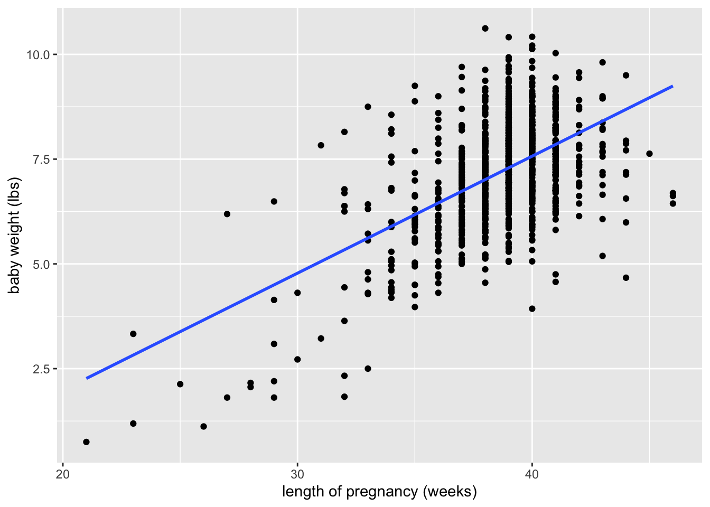

8.29: Simple linear regression
Learning objectives
describe the linear regression model with statistical terminology (population parameter, estimate, random variable, probability distribution)
Interpret regression output (estimates, standard errors, test statistics, p-values, and confidence intervals)
Statistics vocabulary
Population parameter: an unknown quantity related to the population of interest (e.g., true mean resting heart rate of professional athletes in Europe)
Estimate: quantity obtained from data to estimate the population parameter (e.g., sample mean of resting heart rate of 100 professional athletes in Europe)
Random variable: a variable whose possible values are numerical outcomes of a random phenomenon. Random variables can be discrete or continuous
Probability distribution: a function that maps a random variable’s numeric outcomes to their probability. Probability distributions are defined by their parameters
The normal distribution is a continuous probability distribution defined by two parameters: mean \(\mu\) and standard deviation \(\sigma\) (or variance \(\sigma^2\))
e.g., let \(X\) be the random variable that represents the resting heart rate of a given professional athlete. We could say that \(X \sim N(\mu=70,\sigma=5)\)
Exercise
Write your own example of a continuous random variable and normal distribution. You can use the normal distribution link to obtain plausible values for the mean and standard deviation.
Simple linear regression model
We define the simple linear regression model as:
\[ Y = \beta_0 + \beta_1X + \epsilon, \epsilon \sim N(0,\sigma^2) \]
We can also write this as:
\[ Y \sim N(\beta_0 + \beta_1X, \sigma^2) \]
Exercise
Match the vocabulary above with the regression model
Which variable(s) are random? Which are fixed?
What is the probability distribution for the random variable(s)?
What are the population parameters?
Estimated regression line
We write the estimated regression line as:
\[ \hat{Y}=\hat{\beta_0}+\hat{\beta_1}X \]
and write the residuals \(r\) (\(\hat{e}\)) as \(r=Y-\hat{Y}\)
.png)
Putting all the pieces together
Exercise
Write the estimated regression line for the births14 data
# A tibble: 2 × 7
term estimate std.error statistic p.value conf.low conf.high
<chr> <dbl> <dbl> <dbl> <dbl> <dbl> <dbl>
1 (Intercept) -3.60 0.523 -6.88 1.03e-11 -4.62 -2.57
2 weeks 0.279 0.0135 20.7 1.80e-79 0.253 0.306
Sampling distribution of \(\hat{\beta}\)
Because the estimated value \(\hat{\beta_1}\) is calculated from a sample, and the sample arose from a random process, \(\hat{\beta_1}\) is a random variable with its own probability distribution!
It turns out that with the specification given above, \(\hat{\beta_1}\) has a normal distribution. The estimated standard deviation of this distribution is the standard error of \(\hat{\beta_1}\)
Test statistic & p-value
p-value: probability of obtaining results at least as extreme as those observed assuming the null hypothesis is true
In other words, if we assume that nothing special is going on, what is the probability that we observe a relationship at least as extreme as what we see in the data?
In regression, the null hypothesis, or the assumption that there is no relationship between the variables, is \(H_0: \beta_1=0\)
Because \(\hat{\beta_1}\) has a normal distribution (and skipping some technical details), we can use the following test statistic to calculate the desired probability
\[ \frac{\hat{\beta_1}}{SE(\hat{\beta_1})} \sim t_{n-2} \]
We use the t-distribution when the population standard deviation is unknown (as is the case for the distribution of \(\hat{\beta_1}\) ). So, we can use this quantity and the t-distribution to calculate the p-value.
Confidence interval
Similarly, we can use the t-distribution to calculate the confidence interval, or a plausible range for the true value of the population parameter \(\beta_1\)
\[ \hat{\beta_1} \pm t^*_{n-2}[SE(\hat{\beta_1})] \]
Exercise
See for yourself: use the estimate and standard error from the regression output to calculate the test statistic, p-value, and confidence interval. The pt() R function calculates (cumulative) probabilities for the t-distribution, and the qt() function calculates critical values.
Interpreting regression output
When reporting results from a regression model, we primarily focus on the estimates, p-values, and confidence intervals. (It is important to check the standard errors though! Inflated standard errors can indicate a problem with the model. We will talk about this more in a later lecture)
# A tibble: 2 × 7
term estimate std.error statistic p.value conf.low conf.high
<chr> <dbl> <dbl> <dbl> <dbl> <dbl> <dbl>
1 (Intercept) -3.60 0.523 -6.88 1.03e-11 -4.62 -2.57
2 weeks 0.279 0.0135 20.7 1.80e-79 0.253 0.306For each additional week of pregnancy, infant birth weight increases by 0.28 lbs, on average. The association between weeks of pregnancy and infant birth weight is statistically significant (p<.001, 95% CI: [0.25, 0.31])
Assuming there is no association between weeks of pregnancy and infant birth weight, the probability of observing results as extreme as these is <.001. Therefore, we have evidence that there is a relationship between weeks of pregnancy and infant birth weight.
If we repeated this experiment 100 times and constructed a confidence interval in the same way, we would expect 95 of the intervals to contain the true value of \(\beta_1\). Therefore, we are 95% confident that the true value of \(\beta_1\) is between 0.25 and 0.31.
Incorrect interpretations
The probability that the null hypothesis is false is <0.001
There is a 95% chance that the true value of \(\beta_1\) is between 0.25 and 0.31
We are 95% confidence that \(\hat{\beta_1}\) is between 0.25 and 0.31
References
http://www.stat.yale.edu/Courses/1997-98/101/ranvar.htm